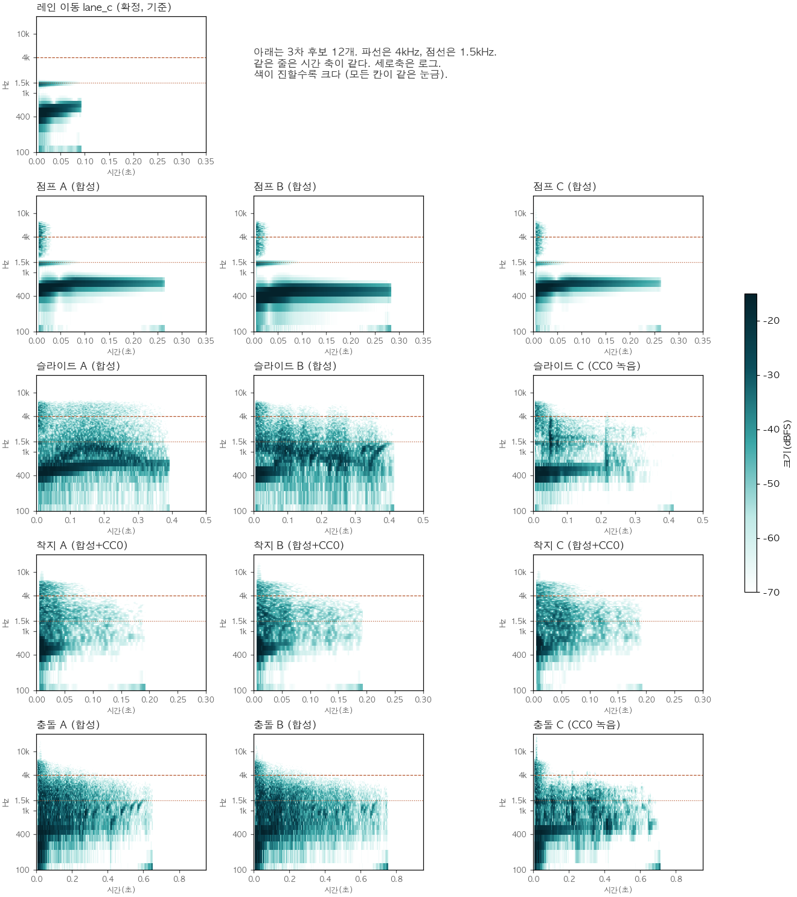

소리 후보 3차
모든 효과음을 lane_c와 같은 재료로 다시 만들었습니다. 게임에는 아직 들어가지 않았습니다. 종류마다 하나씩 골라 주세요.
지금 고른 소리:
확정된 소리
배경 음악: Jelly Pulse (bgm_3)마단조, 100BPM, 끊김 없는 반복
레인 이동: lane_c짧은 뽁 + 아주 작은 유리빛. 높이·밝기 슬라이더의 영향을 받지 않습니다
효과음 고르기
누르면 바로 들리고 그 소리가 선택됩니다. 점선 "2차"는 지난번에 고른 소리입니다. 높이·밝기는 소리마다 따로 기억합니다. 파일은 6kHz 위가 이미 깎여 있어 밝기는 6kHz 아래에서 차이가 납니다. 높이를 바꾸면 재생 속도도 같이 바뀌어 길이가 달라집니다.
같이 듣기
bgm_3 박자에 맞춰 lane_c와 위에서 고른 소리를 플레이하듯 틀어 줍니다.
측정
숫자 표와 lane_c 재료 분석은 report.md, 출처는 LICENSES.md에 있습니다.
